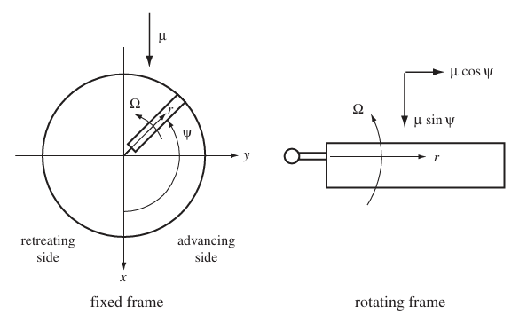
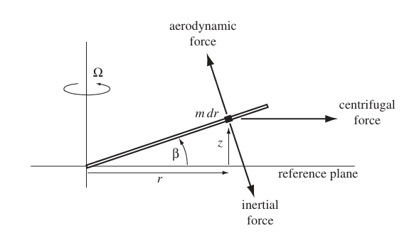
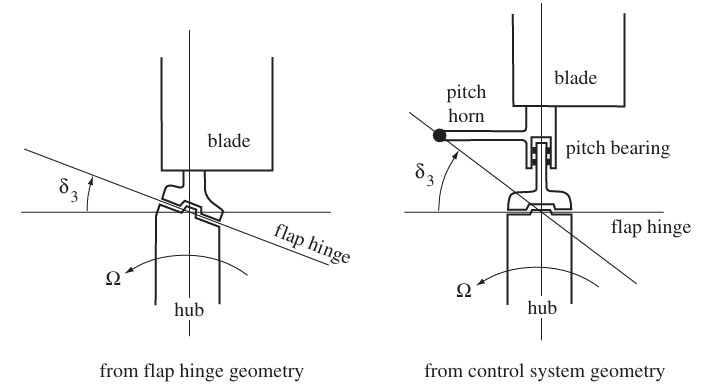
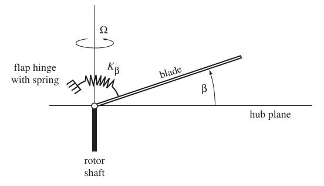
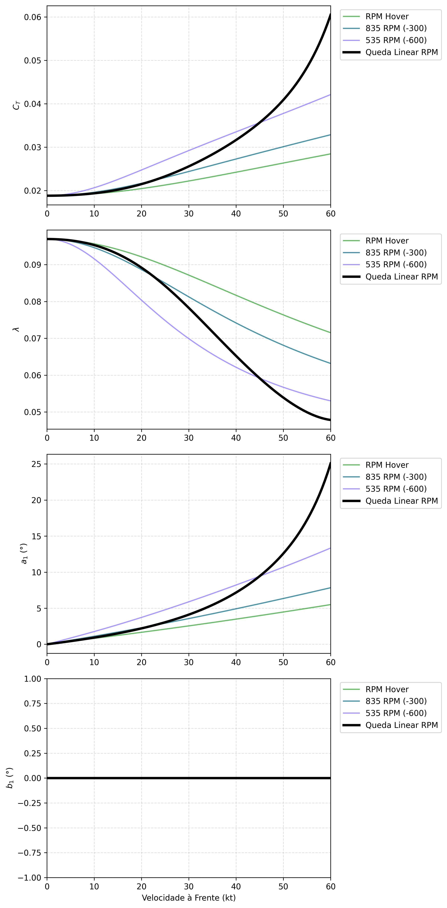
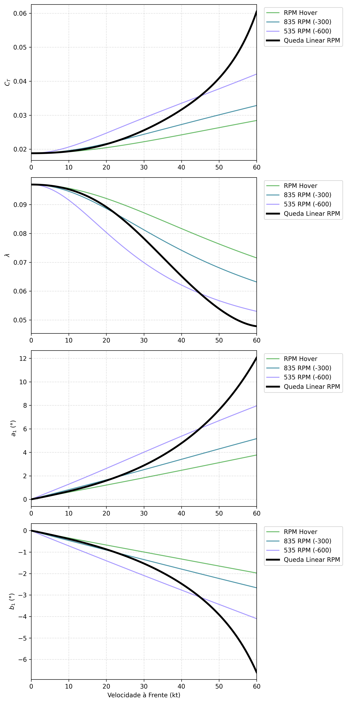
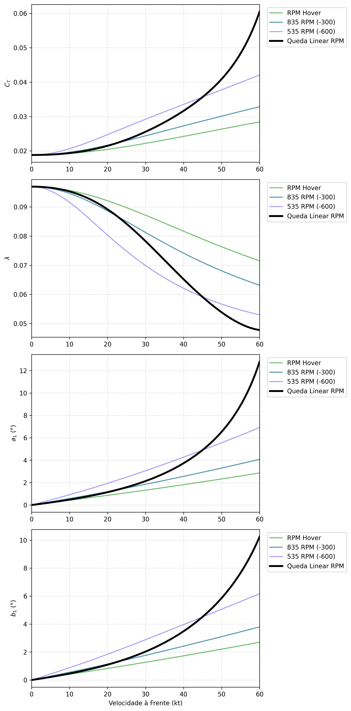

Vamos considerar a dinâmica de malha aberta (open-loop) de um rotor teetering controlado exclusivamente por sua velocidade rotacional (\(\Omega\)) em um escoamento livre com velocidade de avanço. Nesta arquitetura, o passo (pitch) das pás é fixo, e o mecanismo fundamental de controle depende inteiramente da modulação do RPM. Para compreender plenamente a dinâmica de voo resultante — e o acoplamento inerente entre tração (thrust), arfagem (pitch) e rolagem (roll) — é necessária uma análise rigorosa da interação entre as forças restauradoras inerciais e as assimetrias aerodinâmicas.
Com base na compreensão aeromecânica desse rotor e sua influência na dinâmica malha aberta do veículo, poderemos extrapolar o entendimento para o veículo malha fechada como um todo, ou seja, compreender os desafios para leis de controle de uma configuração de rotores teetering de um eVTOL.
Sumário
- O Equilíbrio Base: Inércia versus Aerodinâmica
- Aceleração à Frente: A Dominância da Assimetria
- Controle de RPM: O Acoplamento entre Tração e Arfagem
- Mast Bumping: Os Limites da Folga do Teetering
- Intervenção Aeroelástica: O Acoplamento Passo-Batimento (Pitch-Flap) \(\delta_3\)
- Intervenção Mecânica: A Mola Restauradora no Cubo (Hub Spring)
- A Não-Linearidade das Derivadas de Estabilidade
- Conclusão
- Anexo - Plots
O Equilíbrio Base: Inércia versus Aerodinâmica


Visão Física:
Uma pá de rotor em um cubo teetering atua como um “pêndulo forçado”. À medida que gira, a massa da pá é submetida a um campo centrífugo. Essa tração para fora atua como uma mola inercial, tentando constantemente puxar a pá para que fique plana no plano de rotação. Opondo-se a essa mola estão as forças aerodinâmicas, que empurram a pá para cima ou para baixo com base no vento relativo local.
Crucialmente, como a frequência da força aerodinâmica corresponde à frequência rotacional das pás, o rotor atua como um sistema rotativo operando em ressonância. Em qualquer sistema ressonante, o deslocamento máximo atrasa a função de força máxima em exatamente 90 graus (phase lag). Portanto, uma assimetria aerodinâmica que atinge o pico nas laterais do disco do rotor traduz-se fisicamente em um deslocamento máximo sobre o nariz e a cauda.
Visão Matemática:
A equação fundamental de movimento para o grau de liberdade de batimento (flapping) \(\beta\) é governada pelo equilíbrio de momentos em torno da articulação teetering:
\[I_\beta \ddot{\beta} + \Omega^2 I_\beta \beta = M_A\]
A força centrífuga \(F_{CF}\) em um elemento de massa diferencial \(dm\) no raio \(r\) é impulsionada pela velocidade rotacional:
\[dF_{CF} = (\Omega^2 r) dm\]
Quando a pá realiza o movimento de flapping para cima em um ângulo \(\beta\), essa força radial cria um momento restaurador \(M_{CF}\) em torno da articulação. Integrando ao longo da envergadura obtemos o momento de enrijecimento centrífugo (centrifugal stiffening):
\[M_{CF} = \int_0^R (\Omega^2 r)(\beta r) dm = \Omega^2 \beta \int_0^R r^2 dm = \Omega^2 I_\beta \beta\]
Isso demonstra um princípio fundamental: o enrijecimento centrífugo é proporcional ao quadrado do RPM (\(\Omega^2\)).
O momento de força aerodinâmica \(M_A\) é impulsionado pela pressão dinâmica \(q = \frac{1}{2}\rho U_T^2\). A velocidade tangencial \(U_T\) combina a rotação e a velocidade de avanço \(V\):
\[U_T = \Omega r + V \sin\psi\]
Portanto, a força de sustentação aerodinâmica em um elemento de pá é proporcional a \((\Omega r + V \sin\psi)^2\). A diferença na velocidade ao quadrado que impulsiona a assimetria entre a ponta da pá que avança (\(\psi = 90^\circ\)) e a ponta que recua (\(\psi = 270^\circ\)) é:
\[\Delta U_T^2 = (\Omega R + V)^2 - (\Omega R - V)^2 = 4\Omega R V\]
Isso estabelece a segunda relação fundamental: a assimetria aerodinâmica absoluta é proporcional ao produto do RPM e da velocidade de avanço (\(\Omega V\)).
Para derivar uma relação simplificada para o ângulo de flapping em regime permanente (steady-state), equilibramos o momento aerodinâmico motriz com o momento restaurador centrífugo. Assumindo uma resposta de batimento harmônico \(\beta(\psi) = a_0 - a_1 \cos\psi - b_1 \sin\psi\), os termos inerciais e centrífugos para o flapping cíclico se cancelam matematicamente na ressonância. A inclinação longitudinal \(a_1\) é impulsionada pela assimetria aerodinâmica de \(1/\text{rev}\), que descobrimos ser proporcional a \(\Omega V\). Dividindo essa força aerodinâmica pela rigidez centrífuga (\(\Omega^2 I_\beta\)), encontramos a proporcionalidade da amplitude do flapping:
\[a_1 \propto \frac{\Omega V}{\Omega^2} = \frac{V}{\Omega}\]
Esta razão é proporcional à razão de avanço (advance ratio) \(\mu = \frac{V}{\Omega R}\). A integração formal dos momentos aerodinâmicos ao longo da pá, assumindo inflow \(\lambda\) constante, produz a equação completa do flapping longitudinal em regime permanente:
\[a_1 = \frac{2\mu \left( \frac{4}{3}\theta_0 - \lambda \right)}{1 - \frac{1}{2}\mu^2}\] onde:
\(a_1\) é o coeficiente de batimento longitudinal. Ele representa fisicamente o ângulo (em radianos) em que o plano das pontas das pás (tip-path plane) se inclina para trás em relação ao eixo do mastro, fenômeno conhecido como blowback.
\(\mu\) é a razão de avanço (advance ratio). É um parâmetro adimensional que representa a “severidade” da velocidade de avanço, calculada dividindo a velocidade de voo do veículo (\(V\)) pela velocidade tangencial da ponta da pá girando (\(\Omega R\)).
\(\theta_0\) é o ângulo de passo (pitch) geométrico fixo da pá. Nesta forma simplificada da equação, assume-se que a pá não possui torção ao longo da envergadura, operando com um ângulo de incidência raiz-ponta constante.
\(\lambda\) é a razão de influxo (inflow ratio). Trata-se de um parâmetro adimensional que descreve o fluxo de ar atravessando o disco do rotor de cima para baixo. É calculado dividindo a velocidade axial total (a velocidade do ar induzida pelo próprio empuxo do rotor mais qualquer fluxo devido à velocidade vertical do veículo) pela velocidade tangencial da ponta da pá (\(\Omega R\)).
Aceleração à Frente: A Dominância da Assimetria
Visão Física:
Ao acelerar o veículo para a frente (aumentando \(V\)) enquanto se mantém a velocidade rotacional (\(\Omega\)) constante, o equilíbrio dinâmico se rompe. A pá que avança encontra um vento relativo progressivamente mais rápido, e a pá que recua encontra um vento mais lento. Como o RPM está travado, a mola centrífuga que mantém o disco plano não pode se fortalecer. A crescente assimetria aerodinâmica força a pá que avança a realizar um flapping mais alto. Devido ao sistema rotativo operando em ressonância, esse pico de velocidade ascendente na posição de 3 horas manifesta-se como um deslocamento máximo para cima na posição de 12 horas, resultando em um blowback longitudinal.
Em uma arquitetura eVTOL lift-plus-cruise, essa inclinação para trás se opõe à direção do voo. Durante a fase de transição, o veículo não pode simplesmente baixar o nariz (pitch down) para compensar, porque o ângulo de arfagem da fuselagem deve ser mantido exatamente no ângulo de ataque aerodinâmico que fornece a margem de sustentação necessária acima da velocidade de estol da asa (\(V_s\)). Consequentemente, para manter a aceleração à frente contra a tração do rotor inclinada para trás, o sistema de controle de voo deve adicionar potência às hélices propulsoras (pusher propellers) para superar este vetor oposto.
Visão Matemática:
Com \(\Omega\) fixo, o fator de assimetria aerodinâmica (\(4\Omega R V\)) cresce linearmente com \(V\), enquanto a rigidez restauradora (\(\Omega^2 I_\beta\)) permanece constante. Observando novamente a equação de flapping longitudinal \(a_1\) derivada para o equilíbrio base:
\[a_1 = \frac{2\mu \left( \frac{4}{3}\theta_0 - \lambda \right)}{1 - \frac{1}{2}\mu^2}\]
À medida que \(V\) aumenta, a razão de avanço \(\mu\) aumenta. Matematicamente, isso força \(a_1\) a subir: o multiplicador \(\mu\) no numerador cresce, o termo \(1 - \frac{1}{2}\mu^2\) no denominador encolhe, e a razão de influxo (inflow ratio) \(\lambda\) cai devido à sustentação de translação (translational lift). A força aerodinâmica supera a inércia centrífuga, inclinando o disco para trás.
Vide Figura 1 em Anexo - Plots.
Controle de RPM: O Acoplamento entre Tração e Arfagem
Visão Física:
Comandar um aumento de tração girando o rotor mais rápido (aumentando \(\Omega\)) a uma velocidade de avanço \(V\) constante acopla a aceleração vertical com a dinâmica de arfagem. À medida que o RPM aumenta, a diferença absoluta na pressão dinâmica entre os lados esquerdo e direito do disco cresce (\(\propto \Omega V\)). No entanto, a mola centrífuga endurece muito mais rápido (\(\propto \Omega^2\)). A rigidez inercial domina a assimetria aerodinâmica, fazendo com que o disco teetering inerentemente se achate de volta em direção ao plano do cubo. Do seu estado anterior de blowback, o rotor inclina-se para a frente.
Esse acoplamento dinâmico complica as leis de controle. Um requisito fundamental de um sistema de controle de voo (FCS) é a capacidade de desacoplar os comandos verticais (heave) dos comandos de atitude. Se o FCS comandar um aumento de RPM para alterar a trajetória de voo, os rotores inadvertidamente inclinarão o veículo para a frente, exigindo momentos contrários aplicados via cross-feed. Além do aumento da complexidade das leis de controle MIMO, esse acoplamento prejudica a manobrabilidade. Além disso, torna-se particularmente prejudicial em condições de voo assimétrico, como uma falha de motor, onde as respostas não comandadas de arfagem ou rolagem dos rotores remanescentes se cruzam com as correções de heave necessárias, desafiando a capacidade do sistema de manter o equilíbrio.
Visão Matemática:
Relembrando nossa derivação proporcional, a amplitude de flapping em regime permanente \(\beta\) é a razão entre a função de força aerodinâmica e a rigidez:
\[\beta \propto \frac{\Omega V}{\Omega^2} = \frac{V}{\Omega} \propto \mu\]
À medida que \(\Omega\) aumenta, a razão de avanço \(\mu\) diminui estritamente. Voltando à equação \(a_1\), o termo motriz dominante é \(\frac{4}{3}\mu\theta_0\). Como o passo \(\theta_0\) é fixo, a queda em \(\mu\) impulsiona diretamente uma redução em \(a_1\). A força aerodinâmica absoluta é maior, mas sua autoridade relativa sobre a pá quadraticamente enrijecida diminui, achatando o disco.
Mast Bumping: Os Limites da Folga do Teetering
Visão Física:
Uma articulação teetering depende de folga mecânica adequada para bater livremente. Se o plano do disco se inclinar muito em relação ao eixo do rotor, a estrutura do cubo entra em contato físico com o mastro, um evento conhecido como mast bumping. Como estabelecido, o disco sofre um blowback quando a velocidade de avanço aumenta. Por outro lado, reduzir a tração exige diminuir o RPM. Quando o RPM cai, a rigidez centrífuga que mantém a pá plana diminui muito mais rapidamente do que a assimetria aerodinâmica. Isso faz com que o disco se incline para trás.
Se o sistema de controle de voo comandar uma rápida redução no RPM durante o voo à frente — talvez para iniciar uma descida ou para gerar um momento diferencial de rolagem ou arfagem — a queda localizada na rigidez centrífuga permite que as forças aerodinâmicas levem o disco do rotor a grandes ângulos de flapping. Em um eVTOL multirotor, uma manobra pode exigir um comando de tração diferencial que reduza o RPM em um rotor específico, tornando essa unidade individual excepcionalmente suscetível a um mast bumping localizado enquanto os outros permanecem bem dentro dos limites.
Visão Matemática:
A folga estrutural fornece um ângulo de flapping máximo permitido, \(\beta_{max}\). Como o coeficiente de batimento longitudinal \(a_1\) é proporcional à razão de avanço:
\[a_1 \propto \mu = \frac{V}{\Omega R}\]
Existe uma razão de avanço crítica, \(\mu_{crit}\), correspondente ao limite mecânico \(\beta_{max}\). Para evitar a condição onde \(a_1 \ge \beta_{max}\), as leis de controle devem garantir que a razão de avanço nunca exceda este limite.
Isso cria um limite inferior dinâmico na velocidade rotacional comandada. Para qualquer velocidade de avanço instantânea \(V\), o RPM é restrito por:
\[\Omega_{min} = \frac{V}{\mu_{crit} R}\]
Este limite matemático determina que, à medida que o veículo voa mais rápido, o sistema de controle de voo perde a autoridade para comandar baixos RPMs em qualquer rotor individual. A tração mínima permitida torna-se uma função da velocidade aerodinâmica, restringindo as margens de controle e exigindo que os algoritmos de proteção de envelope intervenham antes que um mast bumping localizado possa ocorrer.
Intervenção Aeroelástica: O Acoplamento Passo-Batimento (Pitch-Flap) \(\delta_3\)

Visão Física:
Para suprimir o blowback, uma inclinação geométrica (ângulo \(\delta_3\)) pode ser adicionada à articulação teetering. Isso cria um acoplamento cinemático pitch-flap. À medida que as forças aerodinâmicas empurram a pá para cima, a geometria da articulação força mecanicamente a pá a reduzir o passo (pitch down). Isso diminui a sustentação e freia o movimento ascendente, atuando como uma mola aerodinâmica (aerodynamic spring).
Como essa mola eleva a frequência natural efetiva da pá acima da frequência motriz de \(1/\text{rev}\), o rotor não é mais um sistema rotativo operando em perfeita ressonância. Consequentemente, o phase lag cai abaixo de 90 graus. Ao acelerar para a frente, o blowback é reduzido, mas o flapping se manifesta mais cedo na rotação, trocando o efeito de flapping longitudinal \(a_1\) por um efeito de flapping lateral \(b_1\).
Vide Figura 2 em Anexo - Plots.
Em uma configuração multirrotor padrão, o deslocamento lateral de um disco é matematicamente compensado por um rotor oposto contrarrotativo. No entanto, em situações de falha de motor, essa simetria se rompe. Os rotores operacionais remanescentes gerarão momentos laterais não cancelados, exigindo mais potência total para restaurar o equilíbrio.
Visão Matemática:
O fator de acoplamento é \(K = \tan(\delta_3)\), produzindo uma redução de passo de \(\Delta\theta = -K\beta\).
Ao deslocar a frequência natural, o phase lag ressonante \(\phi\) torna-se:
\[\phi = \arctan\left(\frac{1}{K}\right)\]
Se \(\delta_3 = 45^\circ\), \(K = 1\), e o phase lag muda para \(45^\circ\), movendo o deslocamento máximo para fora do eixo longitudinal.
Criticamente, quando \(\Omega\) é modulado, a trajetória de achatamento permanece linear. A mola aerodinâmica restauradora gerada pela redução de passo \(\delta_3\) depende da pressão dinâmica, que escala com \(\Omega^2\). Como a mola centrífuga também escala com \(\Omega^2\), a razão dessas duas molas permanece constante independentemente do RPM. Portanto, o phase lag \(\phi\) é invariante às mudanças de velocidade de rotação.
Intervenção Mecânica: A Mola Restauradora no Cubo (Hub Spring)
Visão Física e a Não Linearidade de Controle:
Alternativamente, uma rigidez mecânica pura — uma hub spring (mola do cubo) — pode ser aplicada para resistir ao movimento teetering. Assim como a articulação \(\delta_3\), esta força restauradora extra empurra a frequência natural para cima da frequência de forçamento, reduzindo o phase lag para menos de 90 graus e introduzindo rolagem lateral durante o voo à frente.

Consequentemente, a hub spring é, em muitos aspectos, equivalente à articulação \(\delta_3\) e sofre do mesmo problema de assimetria multirrotor: uma falha de motor deixa o veículo lutando contra momentos laterais não compensados.
Vide Figura 3 em Anexo - Plots.
Além disso, a mola mecânica introduz uma não-linearidade de controle significativa. A rigidez física de uma mola mecânica é fixa, mas a rigidez centrífuga muda com o quadrado da velocidade do rotor. Isso cria um desequilíbrio. Em baixo RPM, a mola mecânica constante é a força dominante, enquanto em alto RPM, as forças centrífugas que crescem quadraticamente a superam. Como o acoplamento cruzado entre arfagem e rolagem é ditado pela proporção dessas duas molas, o phase lag do rotor não muda a uma taxa constante. Uma grande mudança no RPM em baixas velocidades causa um deslocamento significativo no ângulo de fase, enquanto a mesma mudança no RPM em altas velocidades mal o afeta. O tip-path plane varre continuamente seu vetor de inclinação em um arco assintótico e curvo através dos eixos de arfagem e rolagem conforme o comando de tração muda, tornando as derivadas de controle dependentes do RPM operacional instantâneo.
Visão Matemática:
A introdução de uma rigidez mecânica \(K_\beta\) atualiza a equação de movimento:
\[I_\beta \ddot{\beta} + (\Omega^2 I_\beta + K_\beta)\beta = M_A\]
A frequência natural adimensional \(\nu\) governa a dinâmica de ressonância:
\[\nu = \sqrt{1 + \frac{K_\beta}{I_\beta \Omega^2}}\]
O ângulo de fase \(\phi\) é definido por:
\[\phi = \arctan\left( \frac{\gamma / 8}{\nu^2 - 1} \right)\]
Substituindo a relação da frequência natural no denominador, o termo \(\nu^2 - 1\) avalia exatamente para \(\frac{K_\beta}{I_\beta \Omega^2}\). Isso produz:
\[\tan(\phi) = \frac{\gamma I_\beta \Omega^2}{8 K_\beta}\]
Isso demonstra explicitamente a não-linearidade: a tangente do phase lag é diretamente proporcional a \(\Omega^2\). Como a mola mecânica \(K_\beta\) permanece constante enquanto os fatores inerciais escalam quadraticamente, qualquer mudança no RPM altera ativamente e não-linearmente o eixo geométrico da resposta dinâmica do rotor, exigindo um escalonamento (scheduling) complexo e não-linear nas leis de controle de voo.
A Solução Não Linear:
Para contornar esse problema, uma escolha não linear de molas pode amenizar essas dificuldades relatadas. Em vez de uma rigidez constante, o sistema pode ser projetado de forma adaptativa. Nesse caso, a mola pode inibir os efeitos de teetering somente em alguns RPMs. Como demonstrado no design de rotores aplicados em eVTOLs e detalhado na patente norte-americana US11643196B1 (Teetering propulsor assembly of an electric vertical takeoff and landing aircraft), a articulação pode atuar rigidamente em baixos RPMs para evitar o mast bumping (por exemplo, na aceleração inicial ou parada dos rotores) e, ao mesmo tempo, utilizar a força centrífuga para liberar o teetering em altas velocidades rotacionais. Isso permite que o mecanismo atue com mais liberdade para absorver assimetrias aerodinâmicas durante o voo à frente (quando as cargas aerodinâmicas forem maiores, por exemplo) e ao mesmo tempo mitiga o blockback em voo de transição quando o RPM baixar significativamente.
A Não-Linearidade das Derivadas de Estabilidade
Visão Física:
A estabilidade natural de uma aeronave é frequentemente descrita por como ela reage a mudanças na velocidade em relação ao vento. Quando o disco do rotor se inclina (\(a_1\)), o vetor de tração do rotor acompanha essa inclinação, gerando um momento de arfagem em relação ao centro de gravidade do veículo. Se a aeronave encontra uma rajada horizontal (\(u\)) ou uma rajada vertical (\(w\)), a assimetria aerodinâmica nas pás muda, alterando o ângulo de flapping e reorientando o vetor de tração.
O grande desafio desta arquitetura é que a magnitude dessa reação depende da rigidez centrífuga do rotor. Como a rigidez é governada pelo RPM, a “firmeza” com que o veículo resiste a distúrbios atmosféricos muda dinamicamente com o comando de potência. Um rotor girando em alta rotação será menos afetado por uma rajada do que o mesmo rotor girando em baixa rotação.
Visão Matemática:
As derivadas de estabilidade de arfagem em relação à velocidade à frente (\(M_u\)) e à velocidade vertical (\(M_w\)) quantificam a variação do momento de arfagem devido a distúrbios lineares. Elas são fortemente dependentes da taxa de variação da inclinação do disco do rotor (\(\frac{\partial a_1}{\partial u}\) e \(\frac{\partial a_1}{\partial w}\)).
Revisitando a dependência do flapping longitudinal com a razão de avanço (\(\mu = \frac{V}{\Omega R}\)), notamos que qualquer derivada parcial de \(a_1\) em relação à velocidade \(V\) (ou sua perturbação \(u\)) resultará em uma expressão onde o RPM (\(\Omega\)) permanece no denominador. Por exemplo, de forma simplificada, a derivada \(\frac{\partial a_1}{\partial \mu}\) é proporcional a \(\frac{1}{1 - \frac{1}{2}\mu^2}\).
Isso estabelece que \(M_u\) e \(M_w\) não são valores constantes ou linearmente proporcionais à velocidade do ar. Eles são funções não-lineares que variam inversamente com a velocidade rotacional e são sensíveis ao quadrado da razão de avanço.
O Desafio para as Leis de Controle:
Na teoria clássica de controle de voo, o gain scheduling (escalonamento de ganhos) mapeia as reações do controlador geralmente com base em uma única variável independente, como a velocidade calibrada (airspeed) ou a pressão dinâmica. No entanto, devido à forte não-linearidade geométrica explicada acima, a planta da aeronave (o modelo matemático que o controlador tenta governar) muda de forma contínua e não-linear com o RPM.
Para manter características de manuseio previsíveis (handling qualities), as leis de controle exigem schedules muito mais complicados. Os ganhos do sistema devem ser interpolados em tabelas multidimensionais que monitoram simultaneamente a velocidade e o comando instantâneo de RPM de cada rotor. Omitir essa não-linearidade nos modelos de controle pode levar a respostas lentas em regimes de baixa tração ou a oscilações indesejadas quando os rotores operam próximos da velocidade máxima nominal.
Conclusão
A dinâmica de voo em malha aberta de um rotor teetering de passo fixo controlado por RPM é governada por um equilíbrio contínuo entre a rigidez inercial e as forças aerodinâmicas. Como as forças restauradoras centrífugas escalam com o quadrado da velocidade rotacional (\(\Omega^2\)) enquanto as assimetrias aerodinâmicas escalam com o produto do RPM e a velocidade de avanço (\(\Omega V\)), variar a velocidade do rotor altera fundamentalmente o estado de equilíbrio do disco.
Em resumo, os principais desafios de dinâmica de voo introduzidos por esta arquitetura incluem:
Acoplamento Tração-Atitude (Thrust-Attitude Coupling): Modular o RPM para controlar o heave induz inerentemente momentos de arfagem, exigindo cross-feeding contínuo nas leis de controle para manter uma trajetória de voo desacoplada.
Déficit de Tração na Transição: A tendência inerente do rotor de sofrer blowback durante a aceleração à frente inclina o vetor de tração para longe da direção do voo. Como a arfagem da fuselagem deve ser fixa para satisfazer o ângulo de ataque aerodinâmico para a asa, potência extra é exigida dos propulsores de cruzeiro para superar essa inclinação para trás.
Restrições de Mast Bumping: Como a redução do RPM aumenta a razão de avanço relativa, reduções localizadas na tração durante manobras em altas velocidades podem fazer com que um rotor individual atinja seus batentes mecânicos, necessitando de limites inferiores dinâmicos de RPM nas leis de controle.
Degradação do Voo Assimétrico: A introdução de acoplamentos aeroelásticos ou mecânicos lineares troca o blowback longitudinal por rolagem lateral. Embora esses momentos de rolagem se anulem em uma configuração multirotor simétrica e nominal, uma falha de motor deixa o sistema de controle lutando contra momentos laterais não compensados, o que drena as reservas críticas de potência.
Não-Linearidade de Controle: Ao contrário dos acoplamentos aeroelásticos, as molas mecânicas lineares (hub springs) criam um phase lag que varia quadraticamente com o RPM. O comportamento de acoplamento cruzado entre arfagem e rolagem muda continuamente com base na configuração instantânea de rotação, complicando fortemente o scheduling de controle.
Complexidade no Escalonamento de Ganhos (Gain Scheduling): Como a rigidez inercial do rotor frente a distúrbios depende do RPM, as derivadas de estabilidade geométrica da aeronave (como \(M_u\) e \(M_w\)) tornam-se fortemente não-lineares e acopladas com as próprias derivadas de controle, variando inversamente com a rotação e sendo sensíveis ao quadrado da razão de avanço. Isso impede o uso de malhas de controle lineares simples, exigindo tabelas de controle multidimensionais intrincadas para garantir que a aeronave mantenha qualidades de manuseio previsíveis em todo o envelope operacional.
Compreender esses princípios físicos fundamentais e as tecnologias de mitigação não lineares é essencial para o desenvolvimento das leis de controle em malha fechada necessárias para estabilizar, desacoplar e manobrar veículos que dependem do controle de RPM em uma configuração de multirrotores com articulação de teetering.
Anexo - Plots
Os plots a seguir calculam o coeficiente de tração \(C_T\), o inflow ratio \(\lambda\), o ângulo de basculamento longitudinal \(a_1\) e lateral \(b_1\) para um rotor genérico e típico de eVTOL para várias velocidades à frente e vários RPMs. Três configurações são analisadas:
- Sem mecanismo Delta-3 e sem mola restauradora
- Com mecanismo Delta-3
- Com mola restauradora

Fig. 1 - Variação do flapping longitudinal \(a_1\) e lateral \(b_1\) com velocidade à frente e rotação. Sem mecanismo Delta-3. Sem mola restauradora.

Fig. 2 - Variação do flapping longitudinal \(a_1\) e lateral \(b_1\) com velocidade à frente e rotação. Com mecanismo Delta-3 de 30deg. Sem mola restauradora.

Fig. 3 - Variação do flapping longitudinal \(a_1\) e lateral \(b_1\) com velocidade à frente e rotação. Sem mecanismo Delta-3. Com mola restauradora, \(\nu_\beta=1.4\).
Referências
[1] Leishman, J. G., Principles of Helicopter Aerodynamics, 2ª ed., Cambridge University Press, Cambridge, 2006. — Referência padrão em aerodinâmica de helicópteros, incluindo teoria do momento, dinâmica de batimento e teoria de esteira. Link
[2] Johnson, W., Rotorcraft Aeromechanics, Cambridge University Press, Cambridge, 2013. — Tratamento moderno e abrangente de aeromecânica de rotores, incluindo teoria do disco atuador, modelos de esteira e dinâmica de indução. Link
[3] Bramwell, A. R. S., Done, G., e Balmford, D., Bramwell’s Helicopter Dynamics, 2ª ed., Butterworth-Heinemann, Oxford, 2001. — Referência clássica na formulação de voo e acoplamento de rotores de helicóptero.
[4] Prouty, R. W., Helicopter Performance, Stability, and Control, Krieger Publishing, Malabar, 2002. — Referência clássica sobre qualidades de voo e controle de helicópteros. Link
[5] Padfield, G. D., Helicopter Flight Dynamics, 2ª ed., Blackwell Science, Oxford, 2007. — Referência abrangente sobre qualidades de voo e modelagem de dinâmica de helicópteros. Link
[6] US11643196B1, Teetering propulsor assembly of an electric vertical takeoff and landing aircraft, Google Patents — Patente descrevendo articulação teetering não-linear para eVTOLs. Link
[7] ADS-33E-PRF, Aeronautical Design Standard — Performance Specification: Handling Qualities Requirements for Military Rotorcraft, United States Army Aviation and Missile Command, Redstone Arsenal, 2000. — Critérios de qualidades de voo para aeronaves de asa rotativa. Link